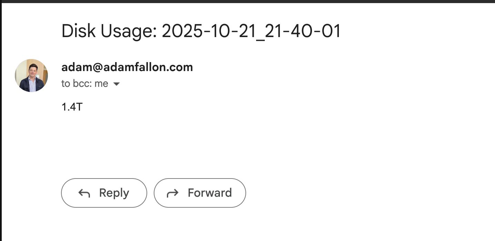
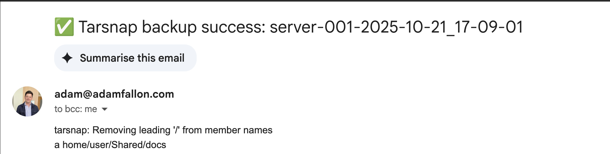

A simple way to send emails using docker and bash
Introduction
I have a home server that I run a bunch of Docker containers on.
Very often I want to run some automated job on the machine, but I don't want to have to check when it is done. One example being periodic backups that I want to know the status of.
Sending an instant message or even better (for me at least) an email to say when something is done would be very nice.
I thought this would be hard but it wasn't really.
Are there better ways of doing this? I am sure there are - but this was quick, easy and I can reuse it.
The Components
- Gmail account with an App Password
- Docker compose running bytemark/smtp
- Simple bash script called "sendmail.sh" in /opt (or anywhere you want really)
- Cron
Gmail Account
I am sure other providers have SMTP support, but I use Gmail (if you have other steps for other providers - my blog is on github and you can raise a PR if you would like! https://github.com/afallon02/blog)
These docs detail how to set up an app password for a Google Account: https://support.google.com/accounts/answer/185833?hl=en
Docker Compose running bytemark/smtp
I use Docker Compose for everything because I find it easy to use. This compose file sets up a SMTP server that can handle sending emails.
Here is the image I am using: https://hub.docker.com/r/bytemark/smtp/
version: '3'
services:
mail:
image: bytemark/smtp
restart: always
environment:
RELAY_HOST: smtp.gmail.com
RELAY_PORT: 587
RELAY_USERNAME: <EMAIL_USERNAME@host.com>
RELAY_PASSWORD: "<APP_PASSWORD>" # Add secret however you want
ports:
- "127.0.0.1:2525:25"
Simple Bash Script
So I want to send email from a bunch of places.
I've got emails that:
- Show me how much disk is left on the machine.
- What new errors have cropped up in journalctl.
- Send me summary of logs (I pass the logs to gpt-oss-20b and then send that as the subject)
Anyway, I expected I would want a simple reusable way to send emails by just detailing the to and from email addresses, subject line and body
#!/bin/bash
# Script to send an email using the local Docker SMTP container.
# This version reads the email body from standard input (stdin).
#
# Usage:
# ./send-email.sh "from@example.com" "to@recipient.com" "Test Subject"
# (and then pipe the body to it, e.g. echo "This is the body." | ./send-email.sh ...)
# --- Config ---
SMTP_URL="smtp://127.0.0.1:2525"
# --- Check for curl ---
if ! command -v curl &> /dev/null
then
echo "Error: 'curl' is not installed. Please install it to use this script."
exit 1
fi
if [ "$#" -ne 3 ]; then
echo "Usage: $0 \"from@address.com\" \"to@address.com\" \"Subject Line\""
echo " (Email body must be piped via stdin)"
exit 1
fi
FROM_ADDRESS="$1"
TO_ADDRESS="$2"
SUBJECT_LINE="$3"
# --- Send the email ---
echo "Connecting to $SMTP_URL..."
echo "From: $FROM_ADDRESS"
echo "To: $TO_ADDRESS"
echo "---"
# We create a subshell to prepend the "Subject:" line to the
# incoming stdin (represented by 'cat -') and pipe it all directly to curl.
(
echo "Subject: $SUBJECT_LINE"
echo "" # Required blank line between headers and body
cat - # This command reads from stdin and passes it on
) | curl -v \
--url "$SMTP_URL" \
--mail-from "$FROM_ADDRESS" \
--mail-rcpt "$TO_ADDRESS" \
--upload-file -
echo "---"
echo "Script finished."
Calling it
Here is the most basic use. I have a big bash script on my server called "run" and cron periodically calls functions in it like so:
30 21 * * * /bin/bash /opt/run disk_usage
And that function looks like this:
function disk_usage {
disk_usage=$(df -h / | awk 'END{print $4}')
now=$(date +%Y-%m-%d_%H-%M-%S)
echo "$disk_usage" | /opt/mail/send_email.sh \
"adam+alerts@adamfallon.com" \
"adam@adamfallon.com" \
"Disk Usage: $now"
}
And that sends me an email like this

Figure 1: Disk Space Email
But I've got more complicated things like backups going to tarsnap that have conditional subject lines:
function create_backup {
COMPUTER_NAME=$(uname -n)
NOW=$(date +%Y-%m-%d_%H-%M-%S)
ARCHIVE_NAME=${COMPUTER_NAME}-${NOW}
SOURCE_FOLDERS=(
"/home/user/Shared/docs"
"/home/user/Shared/books"
)
FROM_EMAIL="adam+alerts@adamfallon.com"
TO_EMAIL="adam@adamfallon.com"
TARSNAP_OUTPUT_FILENAME=/tmp/tarsnap-output-temporary.log
echo "Starting tarsnap backup for: ${SOURCE_FOLDERS[*]}"
echo "Creating tarsnap archive: $ARCHIVE_NAME"
sudo tarsnap -c -v -f "$ARCHIVE_NAME" \
--keyfile /root/tarsnap.key \
"${SOURCE_FOLDERS[@]}" >${TARSNAP_OUTPUT_FILENAME} 2>&1
if [ $? -eq 0 ]; then
subject="✅ Tarsnap backup success: $ARCHIVE_NAME"
else
subject="❌ Tarsnap backup FAILED: $ARCHIVE_NAME"
fi
echo "$subject"
# Send the email
/opt/mail/send_email.sh \
"$FROM_EMAIL" \
"$TO_EMAIL" \
"$subject" < "${TARSNAP_OUTPUT_FILENAME}"
# Clean up the temporary log file
rm "${TARSNAP_OUTPUT_FILENAME}"
}
Which looks like this

Figure 2: TarSnap Log
Conclusion
That's it! Just wanted to share because I thought it was neat. I don't know why I thought it would be really hard to do this, but it was fine.